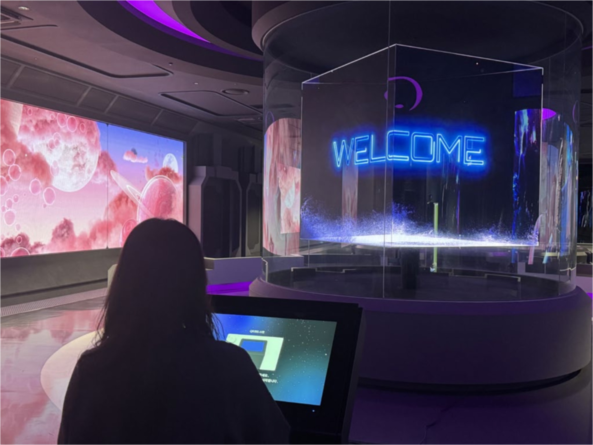
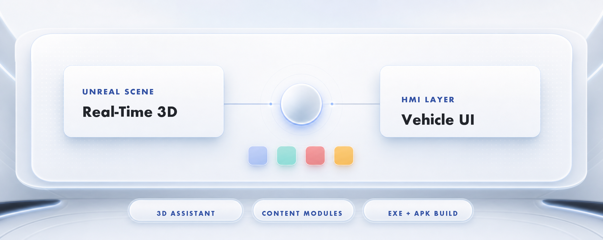

Creative Engineer / Researcher
I build production systems across generative AI, real-time 3D, and immersive media.
Research, software, and exhibition become workflows I can test, teach, and deploy.
Seoul, Korea | jungho10050@gmail.com | creativeengineer-kimjungho.com
Selected Work
Production systems where generated media, interfaces, and real-time engines become working public experiences.

VIVE AI Kiosk Experience Design
An end-to-end kiosk workflow connecting AI-generated visuals, interaction design, and on-site exhibition operation.

Hyundai Mobis Connect
In-vehicle infotainment prototype implemented as real-time EXE and APK packages.

3D Human Digitizing Pipeline
A production pipeline connecting capture, reconstruction, optimization, and reusable digital human assets.

Cinematic VR / AI Screening
Immersive work developed for festival, museum, and international exhibition contexts.
Additional production, 2025: Healing Landscape-Style AI Media Art Content Production for the Jeonju University Industry-Academic Cooperation Foundation.
Writing & Research
Research into AI-assisted pre-production, digital human pipelines, and immersive content systems.
- Software registration
MOVIOLA: Generative AI-Based Pre-Production Storyboard
Registration no. C-2026-042388 · Chung-Ang University Industry-Academic Cooperation Foundation
- Patent application
Multi-Cut Storyboard Generation Using Shot-Size-Based Reference Selection
Application no. 10-2026-0162969 · Tae-Kyung Yoo, Jungho Kim
- Patent application
Agile Vibe Pre-Production Storyboard Patent
Application no. 10-2026-0054962 · Tae-Kyung Yoo, Jungho Kim
- Springer
Digital Twin Pipeline for Optimizing 3D Human Digitizing System
Lecture Notes in Networks and Systems, vol. 1153, CIPR 2024, pp. 75-91. DOI: 10.1007/978-981-97-8093-8_6.
- R&D program
Training R&D Talent for Generative AI and Cloud-Based Content Production
Applied research and curriculum development connecting generative AI with production practice.
- Ph.D. dissertation
A Study on a Digital Twin Pipeline for Optimizing a 3D Human Digitizing System
Graduate School of Advanced Imaging Science, Multimedia & Film, Chung-Ang University.
View remaining publications
- A Study on a Digital Twin Pipeline for Optimizing a 3D Facial Appearance Digitizing System. Journal of Broadcast Engineering, Vol. 28 No. 5, pp. 530-544. DOI: 10.5909/JBE.2023.28.5.530.KCI2023
- Detecting Branches in Silent Films Using a Center-of-Gravity Algorithm: Focusing on Dziga Vertov's <Man with a Movie Camera>.KCI2022
- A Study on Immersive Content Production and Storytelling Methods Using Photogrammetry and Artificial Intelligence.KCI2022
- Correlation Between Head Movement Data and Immersion in Virtual Reality Content.KCI2021
- Remediating tradition with technology: a case study of From Tangible to Intangible: A Media Showcase of Lisa chin p'yori chinch'a uigwe.A&HCI2021
- An Analysis of Interactive Virtual Human Technologies and Characteristics in the Content Industry.KCI2020
- A Study on Out-of-Register Expression in Real-Time Rendering Environments.KCI2020
- A Study on Storyboarding for Pre-Production on Virtual Reality Platforms.KCI2020
- A Study on Directing Methods for VR Animation: Focusing on the VR Animation <DreamTherapy>.KCI2019
Teaching
Project-based courses that translate technical systems into practical creative workflows.
Game Engine I
Unity 2D, generative images, AI-assisted coding, and project-based prototyping.
Game Engine II
Unreal Engine, real-time production, interactive systems, and project-based prototyping.
Contents Programming Practice
Creative coding, production pipelines, and practical software prototyping for media content.
Media Art Programming Practice
p5.js, interaction design, audiovisual media, and experimental computational expression.
Digital Archiving and Data Visualization
Data storytelling, cultural data systems, visual analysis, and digital archive workflows.
프로그래밍은 몰라도 AI는 사용합니다만
한국예술종합학교 융합예술센터 아트콜라이더 아카데미 바이브 코딩 워크숍.
Experience & Education
A practice built across research, higher education, and independent production.
Experience
Founder / CEO, IXIWORKS
Full-time Researcher, Chung-Ang University Industry-Academic Cooperation Foundation
Lecturer, College of Art & Technology, Chung-Ang University
Education
Ph.D. in Image Engineering / Art Engineering
M.A. in Image Engineering / Art Engineering
B.A. in Photography & Video
Latest News
Recent milestones across research, company building, and exhibition work.
Registered MOVIOLA as software copyright for generative AI pre-production storyboarding.
Patent application filed for multi-cut storyboard generation that weights a master shot by shot size to keep cuts visually consistent.
Patent application filed for Agile Vibe Pre-Production Storyboard Patent.